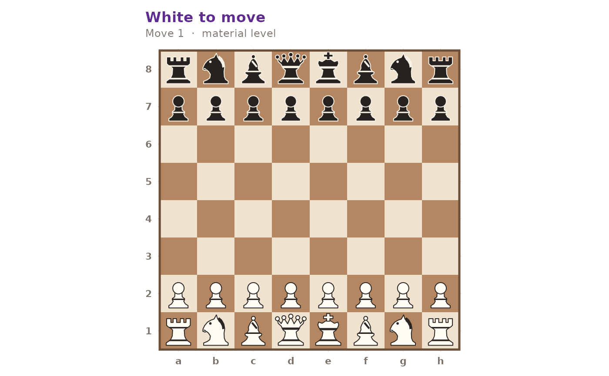
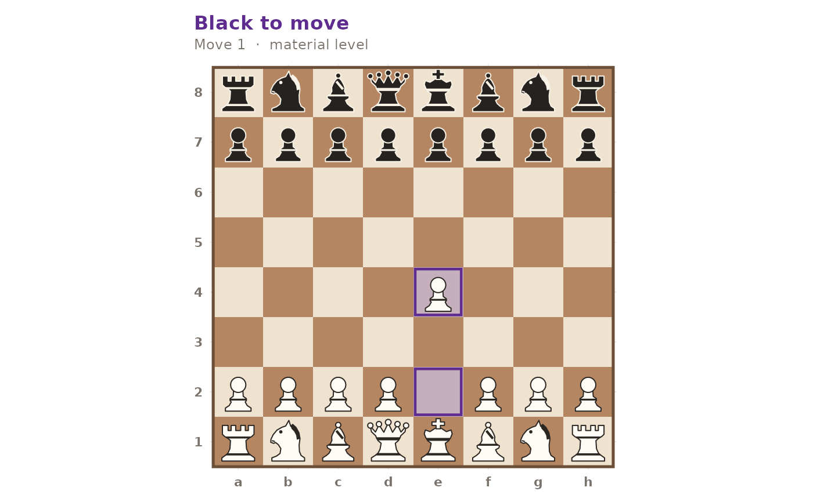

Render a position as a ggplot2 object: an 8x8 board with the pieces drawn
as vector shapes. Returns the plot for further customisation; never draws
directly. Drop the annotations with
gm_plot_board(p) + ggplot2::labs(title = NULL, subtitle = NULL), or add the
FEN yourself with
gm_plot_board(p) + ggplot2::labs(caption = gm_write_fen(p)).
Arguments
- position
A gm_position object.
- highlight
Optional character vector of squares to highlight (e.g.
c("e4", "d5")).- flip
If
TRUE, view from Black's side. DefaultFALSE.
Details
The pieces are polygons rather than text, so they scale with the square and stay legible from a 2-inch figure to a full page, and the board renders on every graphics device including pdf and postscript.
See also
Other visualization:
gm_plot_eval()
Examples
gm_plot_board(gm_position())

# Highlight the squares of a move
gm_plot_board(gm_move(gm_position(), "e4"), highlight = c("e2", "e4"))
